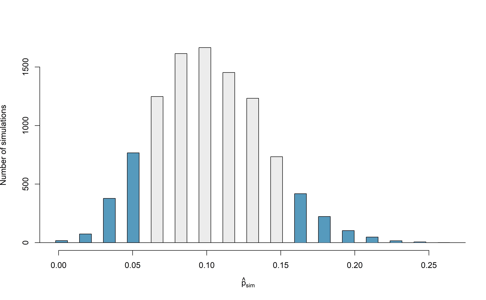
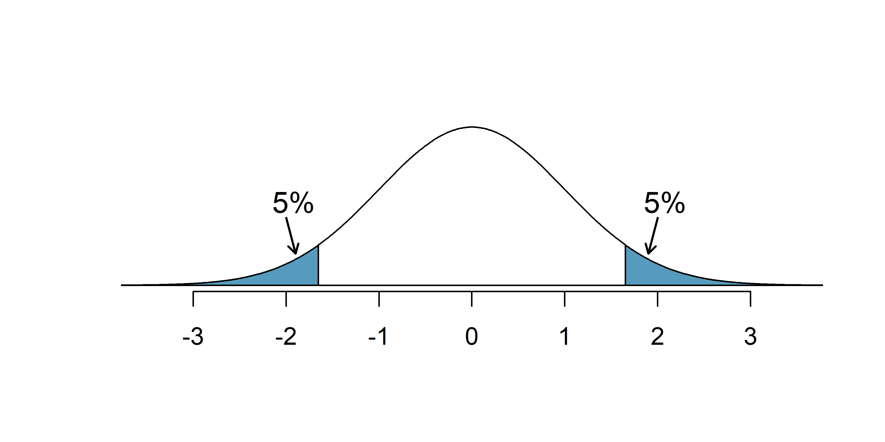
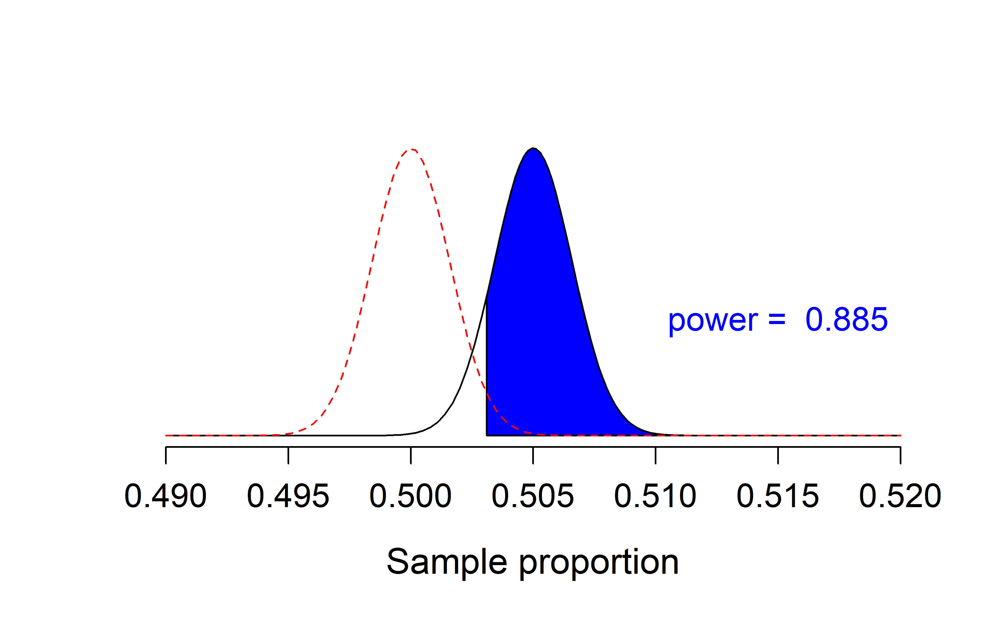
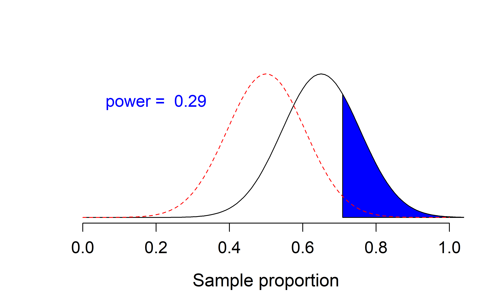

Chapter 12 Errors, power, and practical importance
Using data to make inferential decisions about larger populations is not a perfect process. As seen in Chapter 9, a small p-value typically leads the researcher to a decision to reject the null claim or hypothesis. Sometimes, however, data can produce a small p-value when the null hypothesis is actually true and the data are just inherently variable. Here we describe the errors which can arise in hypothesis testing, how to define and quantify the different errors, and suggestions for mitigating errors if possible.
12.1 Decision errors
In Chapter 9, we explored the concept of a p-value as a continuum of strength of evidence against a null hypothesis, from 0 (extremely strong evidence against the null) to 1 (no evidence against the null). In some cases, however, a decision to the hypothesis test is needed, with the two possible decisions as follows:
- Reject the null hypothesis
- Fail to reject the null hypothesis
For which values of the p-value should you “reject” a null hypothesis? “fail to reject” a null hypothesis?
Since a smaller p-value gives you stronger evidence against the null hypothesis, we reject \(H_0\) when the p-value is very small, and fail to reject \(H_0\) when the p-value is not small.
Hypothesis tests are not flawless. Just think of the court system: innocent people are sometimes wrongly convicted and the guilty sometimes walk free. Similarly, data can point to the wrong conclusion. However, what distinguishes statistical hypothesis tests from a court system is that our framework allows us to quantify and control how often the data lead us to the incorrect conclusion.
In a hypothesis test, there are two competing hypotheses: the null and the alternative. We make a statement about which one might be true, but we might choose incorrectly. There are four possible scenarios in a hypothesis test, which are summarized in Table 12.1.
| Truth | Reject null hypothesis | Fail to reject null hypothesis |
|---|---|---|
| Null hypothesis is true | Type 1 Error | Good decision |
| Alternative hypothesis is true | Good decision | Type 2 Error |
A Type 1 Error is rejecting the null hypothesis when \(H_0\) is actually true. Since we rejected the null hypothesis in the Martian alphabet example and sex discrimination case study, it is possible that we made a Type 1 Error in one or both of those studies.
A Type 2 Error is failing to reject the null hypothesis when the alternative is actually true. Since we failed to reject the null hypothesis in the medical consultant, it is possible that we made a Type 2 Error in that study.
In a US court, the defendant is either innocent (\(H_0\)) or guilty (\(H_A\)). What does a Type 1 Error represent in this context? What does a Type 2 Error represent? Table 12.1 may be useful.
If the court makes a Type 1 Error, this means the defendant is innocent (\(H_0\) true) but wrongly convicted. A Type 2 Error means the court failed to reject \(H_0\) (i.e., failed to convict the person) when they were in fact guilty (\(H_A\) true).
Consider the Martian alphabet study where we concluded students were more likely to say that Bumba was the figure on the left. What would a Type 1 Error represent in this context?111
How could we reduce the Type 1 Error rate in US courts? What influence would this have on the Type 2 Error rate?
To lower the Type 1 Error rate, we might raise our standard for conviction from “beyond a reasonable doubt” to “beyond a conceivable doubt” so fewer people would be wrongly convicted. However, this would also make it more difficult to convict the people who are actually guilty, so we would make more Type 2 Errors.
How could we reduce the Type 1 Error rate in US courts? What influence would this have on the Type 2 Error rate?
To lower the Type 1 Error rate, we might raise our standard for conviction from “beyond a reasonable doubt” to “beyond a conceivable doubt” so fewer people would be wrongly convicted. However, this would also make it more difficult to convict the people who are actually guilty, so we would make more Type 2 Errors.
How could we reduce the Type 2 Error rate in US courts? What influence would this have on the Type 1 Error rate?112
The example and guided practice above provide an important lesson: if we reduce how often we make one type of error, we generally make more of the other type.
12.2 Significance level
The significance level provides the cutoff for the p-value which will lead to a decision of “reject the null hypothesis”. When the p-value is less than the significance level, we say the results are statistically significant. This means the data provide such strong evidence against \(H_0\) that we reject the null hypothesis in favor of the alternative hypothesis.
Significance level = probability of making a Type 1 error.
We reject a null hypothesis if the p-value is less than a chosen significance level, \(\alpha\). Therefore, if the null hypothesis is true, but we end up with really unusual data just by chance—a p-value less than \(\alpha\)—then we mistakenly reject the null hypothesis, making a Type 1 error.
The significance level should be chosen depending on the field or the application and the real-life consequences of an incorrect decision. The traditional level is 0.05, but, as discussed in Section 9.3.2, this choice is somewhat arbitrary—there is nothing special about this particular value. We should select a level that is smaller or larger than 0.05 depending on the consequences of any conclusions reached from the test.
If making a Type 1 Error is dangerous or especially costly, we should choose a small significance level (e.g., 0.01 or 0.001). If we want to be very cautious about rejecting the null hypothesis, we demand very strong evidence favoring the alternative \(H_A\) before we would reject \(H_0.\)
If a Type 2 Error is relatively more dangerous or much more costly than a Type 1 Error, then we should choose a higher significance level (e.g., 0.10). Here we want to be cautious about failing to reject \(H_0\) when the null is actually false.
Significance levels should reflect consequences of errors.
The significance level selected for a test should reflect the real-world consequences associated with making a Type 1 or Type 2 Error.
12.3 Two-sided hypotheses
In Chapter 9 we explored whether women were discriminated against. In this case study, however, we have ignored the possibility that men are actually discriminated against. This possibility wasn’t considered in our original hypotheses or analyses. The disregard of the extra alternatives may have seemed natural since we expected the data to point in the direction in which we framed the problem. However, there are two dangers if we ignore possibilities that disagree with prior beliefs or that conflict with our world view:
Framing an alternative hypothesis simply to match the direction that the data are expected to point will generally inflate the Type 1 Error rate. After all the work we have done (and will continue to do) to rigorously control the error rates in hypothesis tests, careless construction of the alternative hypotheses can disrupt that hard work.
If we only use alternative hypotheses that agree with our worldview, then we are going to be subjecting ourselves to confirmation bias, which means we are looking for data that supports our ideas. That’s not very scientific, and we can do better!
The hypotheses we have seen in the past two chapters are called one-sided hypothesis tests because they only explored one direction of possibilities. Such hypotheses are appropriate when we are exclusively interested in the single direction, but usually we want to consider all possibilities.
Consider the situation of the medical consultant. The setting has been framed in the context of the consultant being helpful. This original hypothesis is a one-sided hypothesis test because it only explored whether the consultant’s patients had a complication rate below 10%.
But what if the consultant actually performed worse than the average? Would we care? More than ever! Since it turns out that we care about a finding in either direction, we should run a two-sided hypothesis test.
Form hypotheses to conduct a two-sided test for the medical consultant case study in plain and statistical language. Let \(\pi\) represent the true complication rate of organ donors who work with this medical consultant.
We want to understand whether the medical consultant is helpful or harmful. We’ll consider both of these possibilities using a two-sided hypothesis test.
\(H_0\): There is no association between the consultant’s contributions and the clients’ complication rate, i.e., \(\pi = 0.10\)
\(H_A\): There is an association, either positive or negative, between the consultant’s contributions and the clients’ complication rate, i.e., \(\pi \neq 0.10\).
Compare this to the one-sided hypothesis test, when the hypotheses were:
\(H_0\): There is no association between the consultant’s contributions and the clients’ complication rate, i.e., \(\pi = 0.10\).
\(H_A\): Patients who work with the consultant tend to have a complication rate lower than 10%, i.e., \(\pi < 0.10\).
There were 62 patients who worked with this medical consultant, 3 of which developed complications from their organ donation, for a point estimate of \(\hat{p} = \frac{3}{62} = 0.048\).
According to the point estimate, the complication rate for clients of this medical consultant is 5.2% below the expected complication rate of 10%. However, we wonder if this difference could be easily explainable by chance.
Recall in Section ??, we simulated what proportions we might see from chance alone under the null hypothesis. By using marbles, cards, or a spinner to reflect the null hypothesis, we can simulate what would happen to 62 ‘patients’ if the true complication rate is 10%. After repeating this simulation 10,000 times, we can build a null distribution of the sample proportions shown in Figure 12.1.

Figure 12.1: The null distribution for \(\hat{p}\), created from 10,000 simulated studies.
The original hypothesis, investigating if the medical consultant was helpful, was a one-sided hypothesis test (\(H_A: \pi < 0.10\)) so we only counted the simulations below our observed proportion of 0.048 in order to calculate the p-value of 0.1222 or 12.22%. However, the p-value of this two-sided hypothesis test investigating if the medical consultant is helpful or harmful is not 0.1222!
The p-value is defined as the chance we observe a result at least as favorable to the alternative hypothesis as the result (i.e., the proportion) we observe. For a two-sided hypothesis test, that means finding the proportion of simulations further in either tail than the observed result, or beyond a point that is equi-distant from the null hypothesis as the observed result.
In this case, the observed proportion of 0.048 is 0.052 below the null hypothesized value of 0.10. So while we will continue to count the 0.1222 simulations at or below 0.048, we must add to that the proportion of simulations that are at or above \(0.10 + 0.052 = 0.152\) in order to obtain the p-value.
In Figure 12.2 we’ve also shaded these differences in the right tail of the distribution. These two shaded tails provide a visual representation of the p-value for a two-sided test.

Figure 12.2: The null distribution for \(\hat{p}\), created from 10,000 simulated studies. All simulations that are at least as far from the null value of 0.10 as the observed proportion (i.e., those below 0.048 and those above 0.152) are shaded.
From our previous simulation, we know that 12.22% of the simulations lie at or below the observed proportion of 0.048. Figure 12.2 shows that an additional 0.0811 or 8.11% of simulations fall at or above 0.152. This indicates the p-value for this two-sided test is \(0.1222 + 0.0811 = 0.2033\). With this large p-value, we do not find statistically significant evidence that the medical consultant’s patients had a complication rate different from 10%.
In Section 11.1, we learned that the null distribution will be symmetric under certain conditions. When the null distribution is symmetric, we can find a two-sided p-value by merely taking the single tail (in this case, 0.1222) and double it to get the two-sided p-value: 0.2444. Note that the example here does not satisfy the conditions and the null distribution in Figure 12.2 is not symmetric. Thus, the result of a ‘doubled’ one-sided p-value of 0.2444 is not a good estimate of the actual two-sided p-value of 0.2033.
Default to a two-sided test.
We want to be rigorous and keep an open mind when we analyze data and evidence. Use a one-sided hypothesis test only if you truly have interest in only one direction.
Computing a p-value for a two-sided test.
If your null distribution is symmetric, first compute the p-value for one tail of the distribution, then double that value to get the two-sided p-value. That’s it!113
Generally, to find a two-sided p-value we double the single tail area, which remains a reasonable approach even when the sampling distribution is asymmetric. However, the approach can result in p-values larger than 1 when the point estimate is very near the mean in the null distribution; in such cases, we write that the p-value is 1. Also, very large p-values computed in this way (e.g., 0.85), may also be slightly inflated. Typically, we do not worry too much about the precision of very large p-values because they lead to the same analysis conclusion, even if the value is slightly off.
12.4 Controlling the Type 1 error rate
Now that we understand the difference between one-sided and two-sided tests, we must recognize when to use each type of test. Because of the result of increased error rates, it is never okay to change two-sided tests to one-sided tests after observing the data. We explore the consequences of ignoring this advice in the next example.
Using \(\alpha=0.05,\) we show that freely switching from two-sided tests to one-sided tests will lead us to make twice as many Type 1 Errors as intended.
Suppose we are interested in finding any difference from 0. We’ve created a smooth-looking null distribution representing differences due to chance in Figure 12.3.
Suppose the sample difference was larger than 0. Then if we can flip to a one-sided test, we would use \(H_A:\) difference \(> 0.\) Now if we obtain any observation in the upper 5% of the distribution, we would reject \(H_0\) since the p-value would just be a the single tail. Thus, if the null hypothesis is true, we incorrectly reject the null hypothesis about 5% of the time when the sample mean is above the null value, as shown in Figure 12.3.
Suppose the sample difference was smaller than 0. Then if we change to a one-sided test, we would use \(H_A:\) difference \(< 0.\) If the observed difference falls in the lower 5% of the figure, we would reject \(H_0.\) That is, if the null hypothesis is true, then we would observe this situation about 5% of the time.
By examining these two scenarios, we can determine that we will make a Type 1 Error \(5\%+5\%=10\%\) of the time if we are allowed to swap to the “best” one-sided test for the data. This is twice the error rate we prescribed with our significance level: \(\alpha=0.05\) (!).

Figure 12.3: The shaded regions represent areas where we would reject \(H_0\) under the bad practices considered in when \(\alpha = 0.05.\)
Hypothesis tests should be set up before seeing the data.
After observing data, it is tempting to turn a two-sided test into a one-sided test. Avoid this temptation. Hypotheses should be set up before observing the data.
12.5 Power
Although we won’t go into extensive detail here, power is an important topic for follow-up consideration after understanding the basics of hypothesis testing. A good power analysis is a vital preliminary step to any study as it will inform whether the data you collect are sufficient for being able to conclude your research broadly.
Often times in experiment planning, there are two competing considerations:
- We want to collect enough data that we can detect important effects.
- Collecting data can be expensive, and, in experiments involving people, there may be some risk to patients.
When planning a study, we want to know how likely we are to detect an effect we care about. In other words, if there is a real effect, and that effect is large enough that it has practical value, then what is the probability that we detect that effect? This probability is called the power, and we can compute it for different sample sizes or different effect sizes.
Power.
The power of the test is the probability of rejecting the null claim when the alternative claim is true.
How easy it is to detect the effect depends on both how big the effect is (e.g., how good the medical treatment is) as well as the sample size.
We think of power as the probability that you will become rich and famous from your science. In order for your science to make a splash, you need to have good ideas! That is, you won’t become famous if you happen to find a single Type 1 error which rejects the null hypothesis. Instead, you’ll become famous if your science is very good and important (that is, if the alternative hypothesis is true). The better your science is (i.e., the better the medical treatment), the larger the effect size and the easier it will be for you to convince people of your work.
Not only does your science need to be solid, but you also need to have evidence (i.e., data) that shows the effect. A few observations (e.g., \(n = 2)\) is unlikely to be convincing because of well known ideas of natural variability. Indeed, the larger the data set which provides evidence for your scientific claim, the more likely you are to convince the community that your idea is correct.
12.6 Statistical significance vs. practical importance
An Austrian study of heights of 507,125 military recruits reported that men born in spring were statistically significantly taller than men born in the fall (p-value < 0.0001). A confidence interval for the true difference in mean height between men born in spring and men born in fall was (0.598, 0.602) cm. Is this result practically important?
No, these results don’t mean much in this context – a difference in average height of around 0.6 cm would not even be noticeable by the human eye! Just because a result is statistically significant does not mean that it is necessarily practically important – meaningful in the context of the problem.
In the previous example, we saw two groups of men that differed in average height, and that difference was statistically significant – that is, the observed difference in sample means of 0.6 cm is very unlikely to occur if the true difference in average height was zero. But, a difference of 0.6 cm in height is not meaningful – not practically important.
Why did this happen? Recall that the variability in sample statistics decreases as the sample size increases. For example, unknown to you, suppose a slight majority of a population, say 50.5%, support a new ballot measure. You want to test \(H_0: \pi = 0.50\) versus \(H_0: \pi > 0.50\) for this population. Since the true proportion is not exactly 0.50, you can make your p-value smaller than any given significance level as long as you choose a large enough sample size!
Figure 12.4 displays this scenario. The distribution of possible sample proportions who support the new ballot measure in samples of size \(n = 100,000\) when 50.5% of the population supports the measure is represented by the black normal curve. The dotted red normal curve is the null distribution of sample proportions for \(H_0: \pi = 0.5\). There is very little overlap between the two distributions due to the very large sample size. The shaded blue area represents the power of the test of \(H_0: \pi = 0.5\) versus \(H_A: \pi > 0.5\) when \(\alpha = 0.05\) – 0.885! That is, we have an 88.5% chance that our p-value will be less than 0.05, even though the true proportion is only 0.05 above 0.5!

Figure 12.4: Black curve: sampling distribution of sample proportions from samples of size 100,000 when the true proportion is 0.505. Red curve: null distribution of sample proportions for a null value of 0.50.
If p-values can be made arbitrarily small with large sample sizes, what might tend to happen with small sample sizes? Would small sample sizes be more likely to give practically important results that are not statistically significant? or statistically significant results that are not practically important?114
Consider the opposite scenario – small sample sizes with a meaningful difference. Suppose again that you would like to determine if a majority of a population support a new ballot measure. However, you only have the time and money to survey 20 people in the community. Unknown to you, 65% of the population support the measure.
Examine Figure 12.5. The distribution of possible sample proportions who support the new ballot measure in samples of size \(n = 20\) when 65% of the population supports the measure is represented by the black normal curve. The dotted red normal curve is the null distribution of sample proportions for \(H_0: \pi = 0.5\). Even though 0.65 is quite a bit higher than 0.50, there is still a lot of overlap between the two distributions due to the small sample size. The shaded blue area represents the power of the test of \(H_0: \pi = 0.5\) versus \(H_A: \pi > 0.5\) when \(\alpha = 0.05\) – only 0.29! That is, even though 65% of the population supports the measure (much higher than 50%), we only have a 29% chance of detecting that difference with our small sample size.

Figure 12.5: Black curve: approximate sampling distribution of sample proportions from samples of size 20 when the true proportion is 0.65. Red curve: approximate null distribution of sample proportions for a null value of 0.50.
Statistical significance versus practical importance.
For large sample sizes, results may be statistically significant, but not practically important. Since sample statistics vary very little among samples with large sample sizes, it is easy for a hypothesis test to result in a very small p-value, even if the observed effect is practically meaningless.
For small sample sizes, results may be practically important, but not statistically significant. Since studies with small sample sizes tend to have very low power, it is difficult for a hypothesis test to result in a very small p-value, even if the observed effect is quite large.
12.7 Chapter review
Since decisions in hypothesis testing are based on probabilities (i.e., p-values), it’s possible to make the wrong decision. A Type 1 error occurs when we reject a true null hypothesis. If we fail to reject a false null hypothesis, we have committed a Type 2 error.
The power of a hypothesis test is the probability of rejecting the null hypothesis, which varies depending on the true value of the parameter. Power typically increases as the sample size increases. Thus, small samples may show an effect in the sample that is practically important — may matter in real life — but the test did not have high enough power to reject the null hypothesis, so was not statistically significant. On the other hand, large samples may show an effect in the sample that isn’t very meaningful, or not practically important, but is statistically significant due to high power.
Terms
We introduced the following terms in the chapter. If you’re not sure what some of these terms mean, we recommend you go back in the text and review their definitions. We are purposefully presenting them in alphabetical order, instead of in order of appearance, so they will be a little more challenging to locate. However you should be able to easily spot them as bolded text.
| confirmation bias | practical importance | two-sided hypothesis test |
| one-sided hypothesis test | significance level | Type 1 Error |
| power | statistical significance | Type 2 Error |
Making a Type 1 Error in this context would mean that students are equally likely to associate Bumba with the figure on the left as the figure on the right, despite the strong evidence (the data suggesting otherwise) found in the experiment. Notice that this does not necessarily mean something was wrong with the data or that we made a computational mistake. Sometimes data simply point us to the wrong conclusion, which is why scientific studies are often repeated to check initial findings.↩︎
To lower the Type 2 Error rate, we want to convict more guilty people. We could lower the standards for conviction from “beyond a reasonable doubt” to “beyond a little doubt”. Lowering the bar for guilt will also result in more wrongful convictions, raising the Type 1 Error rate.↩︎
If the null distribution is not symmetric, then the computer will have to count the proportions in each tail separately, since the two tail proportions may differ.↩︎
Since hypothesis tests with small sample sizes typically have low power, small sample sizes can result in practically important results that are not statistically significant.↩︎